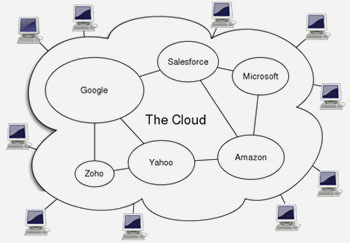
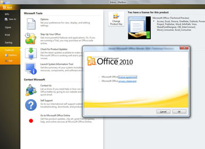

Il Futuro è su una Nuvola
...e non potremmo farne a meno!
Fino ad oggi siamo stati abituati ad utilizzare il nostro computer e le sue risorse localmente, attraverso i programmi che sono installati in esso; tutto questo in futuro non sarà più così, almeno per le piccole cose di tutti i giorni.
Il concetto di Cloud Computing si basa proprio sull'astrazione delle risorse utilizzate, in pratica sulla possibilità di sfruttare hardware e software in remoto attraverso la rete. In realtà una cosa simile succede da anni se pensiamo solamente a come funzionano i terminali remoti connessi a un server centrale, ma con la diffusione di internet e la banda larga questa tecnologia può essere sfruttata su vasta scala e non solamente in un ambiente di rete locale. In pratica a differenza della tipologia client-server di una rete locale nel cloud computing il concetto fondamentale è la distribuzione remota di risorse eterogene. L'eterogeneità di queste risorse però viene vista dall'utilizzatore in maniera "standard" attraverso un livello di astrazione messo a disposizione da chi fornisce tale servizio (es Azure, Amazon EC2 o GoGrid).

Questa cosa ci è familiare se solamente pensiamo a Google e alla sua offerta di applicazioni (Gmail in testa), in molti utilizziamo queste applicazioni, controlliamo la posta, organizziamo i nostri appuntamenti, apriamo documenti e tutto senza installare alcun che....
Bene, questo possiamo considerarlo come il primo passo verso il Cloud Computing.
Il concetto di Cloud Computing non è facilmente traducibile, ma è molto semplice da descrivere. Oggi possiamo scrivere testi, elaborare immagini, ascoltare mp3 ecc utilizzando i software e la potenza di calcolo che abbiamo sul nostro computer; ad esempio possiamo avviare Word e scrivere un testo standocene tranquillamente disconnessi dalla rete, poi nel momento di spedire questo testo per posta elettronica dobbiamo necessariamente andare online, c'è quindi una distinzione netta tra applicazioni che funzionano offline e altre che invece richiedono di essere connessi alla rete.
Il Cloud Computing andrà a spostare tutte le nostre attività online, questo perchè tutto il software che utilizzeremo ci sarà fornito sottoforma di web application (applicazione web) e tutto l'hardware che utilizzeranno queste applicazioni sarà quello che ci viene offerto dalla "nuvola" composta da un numero teoricamente illimitato di risorse. L'unica applicazione che servirà installare sul nostro computer sarà un Browser, e l'hardware richiesto sarà minimo.
Il nostro viaggio verso il cloud computing è già iniziato con l'introduzione dei Netbook, computer minimali dalle basse prestazioni orientati principalmente all'utilizzo della rete. Quando Eric Schimdt ha esordito al Google I/O con "il Browser è il computer, o almeno lo sarà...." si riferiva esattamente a questo nuovo modo di lavorare.
Quando Eric Schimdt ha esordito al Google I/O con "il Browser è il computer, o almeno lo sarà...." si riferiva esattamente a questo nuovo modo di lavorare.
Il vantaggio di questa tecnologia sta principalmente nella sicurezza dei dati e la mancanza di manutenzione degli apparati che sfruttiamo. Pensiamo ai dati che perderemo oggi se un nostro pc si rompesse o venisse attaccato da un virus, sicuramente la grande massa non ha sistemi di sicurezza e di backup per garantire il salvataggio dei dati. Con il Cloud Computing non ci sono costi di manutenzione in quanto sarà il fornitore dei servizi a garantire la loro integrità. Un ulteriore vantaggio di questo approccio è la possibilità di accedere ai propri dati da qualsiasi device connesso alla rete senza dover ogni volta tornare in ufficio o a casa per poter ritrovare i propri documenti.
La sicurezza dei dati già giustifica ampiamente l'utilizzo di una web application, un secondo vantaggio è quello relativo ai costi perchè le applicazioni online sono spesso gratuite per gli utenti privati e l'hardware richiesto per funzionare molto modesto ed economico. Altro lato positivo è la facilità nella condivisione dei documenti, in un'era di scambio ed interazione risulta fondamentale poter inviare i propri file con facilità ed immediatezza.
Ma ora veniamo ai lati negativi.... che sono quelli legati alla riservatezza e alla legalità. E' ovvio che per utilizzare una web application dobbiamo accettare delle condizioni di utilizzo del servizio e quindi caricare io nostri dati sui server per utilizzare l'infrastruttura che ci viene offerta. La prima cosa che salta all'occhio è la possiblità che i sistemi vengano violati, in questo caso l'hacker avrà accesso a tutti i nostri dati come se avesse violato il nostro personal computer. Non è una ipotesi molto remota, con la diffusione dei dati affidati alle nuvole gli interessi di chi vuole illegalmente reperire informazioni cresce, ecco perchè si stanno mettendo in campo le più moderne tecniche per la salvaguardia dei dati.
Un altro lato negativo di questo nuovo modo di lavorare è quello che è già venuto alla ribalta recentemente con i Facebook, mi riferisco all'inevitabile grado di controllo che i servizi web come i social network hanno sui dati che gli vengono "affidati".
Tecnicamente hanno bisogno di avere un accesso ai nostri dati per effettuare backup e le manipolazioni che noi gli richiediamo; ma in molti si chiedono se questo margine sia fuori controllo dall'utente anche perchè i termini e le condizioni di utilizzo accettati nella fase di registrazione al servizio sono molte volte difficili da comprendere e possono cambiare facilmente nel tempo.
Ci sono poi altri limiti minori come ad esempio la quantità di spazio limitata per archiviare i nostri documenti (soprattutto negli account gratuiti), la necessità di avere sempre una connessione internet per eseguire anche quelle cose che prima potevamo fare offline, e non ultimo l'approccio che implica un cambio di filosofia nell'uso del Pc che ha bisogno dei suoi tempi per essere assimilato.
Ovviamente il gestore del servizio cloud per offrirci gratuitamente le sue web application conta molto sulla pubblicità che verrà mostrata costantemente a noi utilizzatori. Dobbiamo considerare che il tempo che passiamo online ha un valore molto alto, in quanto più stiamo connessi più siamo soggetti alla pubblicità; questa è la ragione principale che ha spintoGoogle a Chrome OS, un sistema operativo orientato al cloud computing.
Oggi il cloud computing si concentra principalmente sulle webmail (servizi mail che permettono la gestione totale della posta tramite browser) e sui servizi per la produttività (suite per la gestione/creazione di fogli di calcolo, elaborazione testi, presentazioni, ecc...). Sicuramente un quest'ultima tipologia di applicazioni la fa da padrone Google Docs anche seMicrosoft con il suo Office 2010 sta per entrare in questa area.
Proprio l'ingresso di Microsoft nel mondo Cloud fa intuire quanto il nostro futuro sarà spostato sulle web application. Molti conosceranno il cloud computing grazie alla familiarità e alla sicurezza offerta dal marchio "Office" che, a breve, con la sua versione 2010 sarà distribuito anche come web application.
Stiamo imboccando una strada senza ritorno verso "la nuvola", un mondo popolato da software distribuito e hardware sempre meno costoso ma anche un mondo composto da migliaia di centri dati che conservano le informazioni di milioni di noi: le nostre preferenze musicali, le foto dei nostri cari, i nostri dati personali e la lista delle cose che abbiamo comprato recentemente. Quest'ultima visione è quella che rende leggermente inquietante il quadro del Cloud Computing che lo fa vedere nel modo più esasperato di quello che già oggi è dato dai social network..... un enorme banca dati di studio sugli usi e consumi dei suoi utenti.
Alla prossima!
- Tags: cloud computing | web | web application